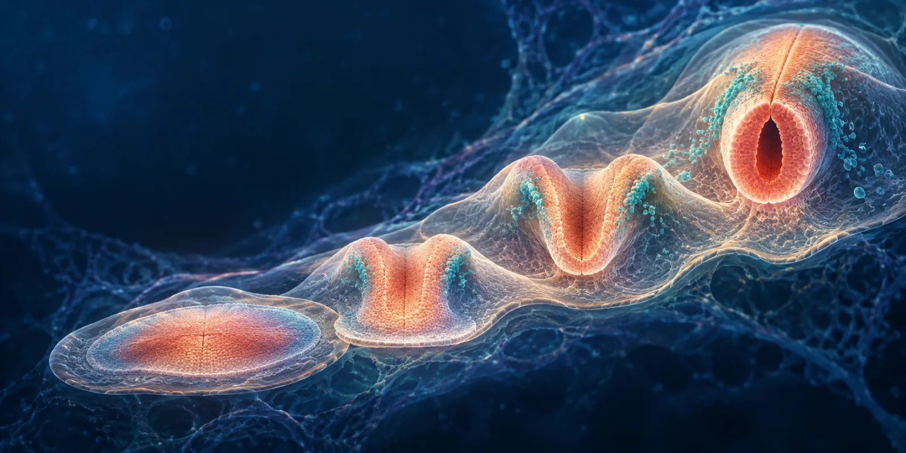
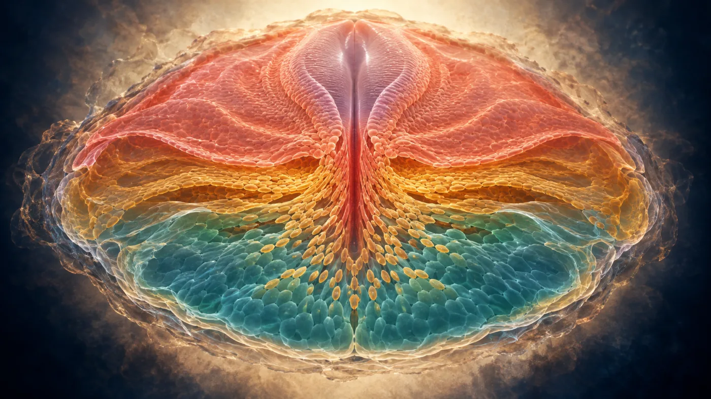
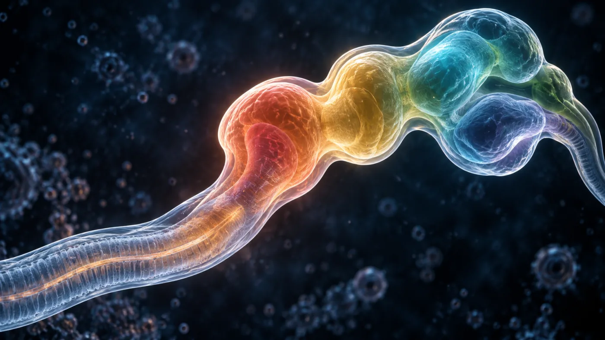

Ectodermo
Origina el neuroectodermo, la epidermis y estructuras relacionadas. La placa neural aparece en su región dorsal.
Tubo neural, cresta neural, placodas ectodérmicas, epidermis, pelo y uñas.
Embriología del sistema nervioso humano
Explora cuándo aparecen las estructuras, cómo se conectan los procesos y qué puede ocurrir si una etapa crítica se altera.
Las edades se expresan desde la fecundación. La edad gestacional obstétrica suele ser unas dos semanas mayor. Las fechas son aproximadas porque los procesos se solapan.

Explorador temporal
Desliza el control para recorrer los hitos principales. Una fecha orienta, pero no separa procesos que ocurren de forma continua.
Pide al grupo que distinga una fecha de inicio aproximada de una ventana de desarrollo. Esta diferencia previene la idea errónea de que cada proceso termina cuando comienza el siguiente.
Semana 3
La gastrulación reorganiza el embrión en tres capas. Solo una parte del ectodermo adopta identidad neural, gracias a señales procedentes del organizador y de la notocorda.
Origina el neuroectodermo, la epidermis y estructuras relacionadas. La placa neural aparece en su región dorsal.
Tubo neural, cresta neural, placodas ectodérmicas, epidermis, pelo y uñas.
Forma la notocorda y gran parte del sistema musculoesquelético, cardiovascular y urogenital.
Notocorda, vértebras, músculo, vasos, sangre, riñones y gónadas.
Produce el revestimiento de los tubos digestivo y respiratorio, además de glándulas asociadas.
Epitelio digestivo y respiratorio, hígado, páncreas y componentes de varias glándulas.
Mecanismo clave
La notocorda y tejidos organizadores secretan antagonistas de BMP, entre ellos nogina y cordina. El ectodermo dorsal reduce la señal BMP y adopta un destino neural. Después, gradientes como SHH, BMP, WNT y ácido retinoico ayudan a establecer identidades dorsales, ventrales, rostrales y caudales.

Visualización artística no proporcional. Los colores distinguen capas y no representan tinciones histológicas.
Días 18 a 28
La placa neural cambia de forma, se pliega y se separa del ectodermo superficial. El cierre no ocurre en un solo punto ni de manera instantánea.
≈ Día 18
El ectodermo dorsal se engrosa sobre la notocorda. Sus células alargadas constituyen la placa neural.
Su cierre completa la separación del extremo encefálico respecto del medio amniótico.
Su cierre completa la neurulación primaria en la región espinal caudal.
Una masa celular se condensa y canaliza para contribuir a segmentos sacrococcígeos.
¿Por qué un suplemento iniciado después del cierre del tubo neural no puede prevenir un defecto que ya ocurrió? Relaciona el tiempo biológico con la prevención.
Microcinema
Tres recursos complementarios para cambiar de escala. Los videos solo se cargan cuando decides reproducirlos.
Animación 3D · Inglés
Úsalo después del simulador para observar cómo cambian simultáneamente la forma y la posición de los tejidos.
Clase académica · Español
Repasa neurulación, vesículas y principales derivados con una explicación universitaria extensa.
Clase guiada · Español
Profundiza en neurulación y derivados neuroepiteliales como apoyo para una segunda revisión.
Los videos son recursos externos de YouTube. Su disponibilidad y contenido pueden cambiar.
Dos linajes principales
La separación durante la neurulación produce poblaciones con destinos distintos. Algunas células de la cresta migran largas distancias.
Tubo neural
La luz del tubo permanece como ventrículos encefálicos y conducto central.
Cresta neural
“Cuarta capa germinal” es una metáfora útil sobre su diversidad, no una capa germinal verdadera.
Identidad espacial
El tubo neural empieza como un epitelio, pero pronto adquiere coordenadas. Gradientes moleculares activan combinaciones de genes que especifican dominios celulares.
Favorecen identidades dorsales y dominios sensitivos.
Interneuronas y circuitos relacionados con procesamiento sensorial.
Motoneuronas e interneuronas vinculadas con salidas motoras.
La notocorda y la placa del piso inducen identidades ventrales.
Contribuyen a organizar identidades a lo largo del eje encefálico y espinal.
Definen combinaciones de identidad según el nivel del neuroeje.
La respuesta depende de cuánto recibe una célula y durante cuánto tiempo.
Semanas 4 a 6
Selecciona una vesícula primaria para seguir su subdivisión, estructuras adultas y cavidades.

Cambio de geometría
CefálicaEntre prosencéfalo y mesencéfalo
CervicalEntre rombencéfalo y médula
PontinaEn el rombencéfalo, abre el cuarto ventrículo
| Primaria | Secundaria | Derivados principales | Cavidad |
|---|---|---|---|
| Prosencéfalo | Telencéfalo | Hemisferios, corteza, ganglios basales, hipocampo, amígdala, bulbos olfatorios | Ventrículos laterales |
| Diencéfalo | Tálamo, hipotálamo, epitálamo, retina, neurohipófisis | Tercer ventrículo | |
| Mesencéfalo | Mesencéfalo | Tectum, tegmento, pedúnculos cerebrales | Acueducto cerebral |
| Rombencéfalo | Metencéfalo | Puente y cerebelo | Cuarto ventrículo |
| Mielencéfalo | Bulbo raquídeo | Cuarto ventrículo |
Región caudal
La organización dorsal y ventral del tubo neural anticipa el circuito sensorial y motor de la médula adulta.
Neuronas posmitóticas se acumulan alrededor de la zona ventricular. Las astas dorsales y ventrales derivan de dominios alares y basales.
Los axones ascienden y descienden alrededor del manto. La mielina aumenta más tarde.
La columna crece más que la médula. Las raíces lumbares y sacras se alargan y forman la cauda equina.
Semanas 6 en adelante
La construcción del sistema nervioso combina producción celular, desplazamiento, selección y ajuste dependiente de actividad.
Corteza cerebral
Las primeras neuronas corticales forman capas profundas. Muchas neuronas posteriores migran más allá de ellas para ocupar capas superficiales. La glía radial funciona como progenitor y andamio.
Periodo fetal y vida posnatal
Nacer no marca el final. La conectividad, la mielina y la regulación de redes cambian durante la infancia, la adolescencia y la adultez temprana.
La subplaca recibe entradas tempranas y ayuda a organizar circuitos antes de la maduración cortical.
La densidad sináptica aumenta con ritmos diferentes según la región y el sistema funcional.
La actividad, la experiencia y señales moleculares estabilizan unas conexiones y eliminan otras.
Los tractos continúan cambiando. No existe una sola edad en la que “termine” toda la maduración cerebral.
La experiencia influye dentro de límites biológicos y ventanas sensibles. No todo cambio temprano es irreversible y no toda función tiene un único periodo crítico.
Correlación clínica
Estos ejemplos conectan mecanismos del desarrollo con hallazgos clínicos. No sustituyen una valoración médica ni describen todos los mecanismos posibles.
Defectos abiertos del tubo neural
Malformaciones mayores del encéfalo
Alteraciones del tamaño y organización cortical
Alteraciones de sustancia blanca y redes
Cierre rostral
La falla grave de cierre craneal impide el desarrollo normal del encéfalo y de la bóveda craneal. La condición es letal.
Cierre caudal
Incluye un espectro que va desde defectos vertebrales ocultos hasta mielomeningocele con compromiso neurológico.
Inducción ventral
El prosencéfalo no se separa de forma adecuada. La gravedad y las causas son heterogéneas.
Migración cortical
Las neuronas no alcanzan o no organizan su destino esperado. Pueden aparecer epilepsia y discapacidad del desarrollo.
Fosa posterior
Alteraciones del desarrollo del vermis, hemisferios o cuarto ventrículo producen patrones clínicos diversos.
Comisuración
La formación parcial o ausente del cuerpo calloso puede presentarse sola o asociada con otras alteraciones.
CDC y OMS recomiendan 400 µg diarios para personas que pueden quedar embarazadas o desde que empiezan a intentar concebir. Situaciones de mayor riesgo requieren indicaciones individualizadas por personal de salud.
Recomendación de la OMSAplicación
Relaciona el hallazgo con la etapa, la estructura embrionaria y el mecanismo. Activa el modo docente para ver claves de discusión.
Pista: ubica el neuroporo caudal y distingue tejido neural de vértebras.
Pista: piensa en el trayecto desde la zona ventricular hasta la placa cortical.
Pista: considera guía axonal, cruce de la línea media y formación de comisuras.
Autoevaluación
Doce preguntas con retroalimentación inmediata. Tu avance se guarda solo en este dispositivo.
Pregunta 1 de 12
Continúa el recorrido
Ya exploraste los mecanismos. Ahora pon a prueba filogenia, ontogenia y organización del sistema nervioso en una experiencia de 40 preguntas.
Abrir NeuroRutaConsulta rápida
No se encontraron términos con esa búsqueda.
Modo docente
Contrastar edad posfecundación con edad gestacional. Pregunta detonadora: ¿qué debe ocurrir antes de que una neurona pueda migrar?
Manipular el simulador y pedir una explicación causal de los defectos rostrales y caudales.
Reconstruir el encéfalo adulto desde las cinco vesículas y vincular cavidades con el tubo original.
Resolver un caso por equipo y cerrar con seis preguntas seleccionadas del banco.
Bibliografía
El contenido sintetiza la presentación proporcionada y fuentes de embriología y neurodesarrollo. Conviene contrastar las fechas con la edición del libro usada en el curso.
Moore, Persaud y Torchia. Embriología clínica.
Sadler. Langman. Embriología médica.
Purves y colaboradores. Neurociencia.
Stiles. The Fundamentals of Brain Development.